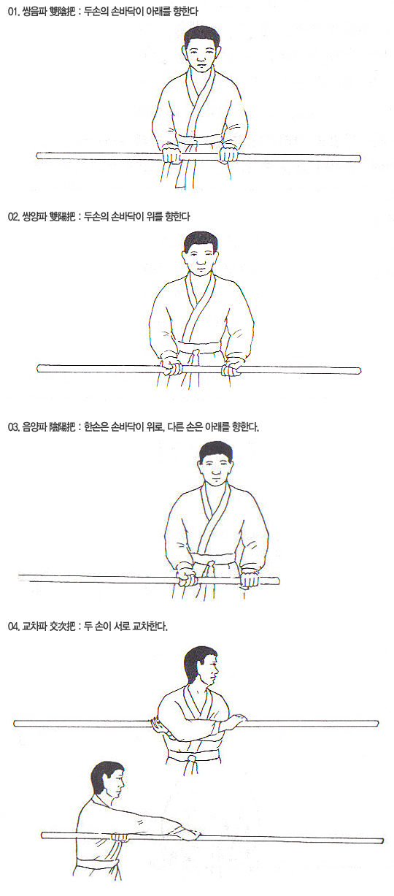

파법把法은 두 손으로 병기의 자루를 제어하는 수법手法과 병기를 운용하는 방법을 가리킨다. 창槍ㆍ곤棍 등의 자루가 긴 병기는 자루의 아무 곳이나 잡을 수 있다는 특징이 있다.
파법把法은 초법招法[무예의 동작]의 기초로서, 파법把法이 바뀌면 초법 역시 변화하게 된다.
우선 잡는 위치가 바뀌면 운용하는 부위가 바뀌게 되고, 초법 또한 이를 따라 변하게 된다. 예를 들면 곤棍에서 파단把段을 잡으면 주로 초단梢段을 사용하고, 초단梢段을 잡으면 주로 파단把段을 사용하게 되며, 중단中段을 잡으면 초단梢段, 중단中段, 파단把段 모두를 사용 할 수 있다.
또한 잡는 방법이 다르면 초법 역시 다르게 된다. 두 손으로 장병기를 잡을 때에는 쌍음파雙陰把[그림1], 쌍양파雙陽把[그림2], 음양파陰陽把[그림3], 교차파交叉把[그림4,5] 등의 방법이 있다. 쌍음파雙陰把,쌍양파雙陽把는 대부분 중단中段을 잡아 초단梢段과 파단把段을 사용하고, 음양파陰陽把는 대부분 파단把段이나 초단梢段 어느 한 부분을 잡고 다른 부분을 사용하며, 교차파交叉把는 무화舞花 동작 중에 나오게 된다.
이외에도 손가락의 힘을 주거나 잡는 방법에 따라 찌르거나 내리누르고 치는 등의 동작이 이루어진다. 그러므로 항상 상대 손의 잡는 위치와 방법을 관찰하면 초법의 변화를 추측할 수 있다.
병기가 중간 동작을 거쳐 공격 목표에 접근하는 순간에는, 자루를 힘주어 잡고 격발擊發하여야 전신의 힘이 손을 거쳐 병기의 사용하는 부위에 이르게 되고, 목표를 맞힌 후 반작용에 의한 진동에도 병기를 놓치지 않게 된다. |
 |
| |